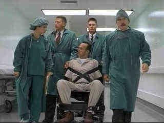

Desperate Measures/C,A
Columbia/1997/101m/ANA,WS 1.85,PS1.33
Stretching plausibility to the breaking point, this thriller about a convict who has the only compatible bone marrow to save a cop's kid may be stylishly made, but there are times when the plot twists are positively laughable.
Andy Garcia plays the cop with a sick kid. In the opening sequence, Frank Conner(Garcia) and a cop partner break-in to an office with a computer system that seems to have all the information they need. The big surprise is when we discover they are cops and just what information they are seeking: Murderer Peter McNab is a blood match for young Conner.
Michael Keaton plays McNab, yet another psychopathic genius killer, a prisoner locked up under the strictest security. Keaton seems to love these roles of characters on the periphery of social order. Remember Pacific Heights. It was a fine role for the intense actor. There are a couple of sessions in prison with Garcia trying to convince "life" prisoner Keaton to undergo the surgery to save his kid. Once Keaton figures out how he can use the situation, it off to the land where anything can happen and the cops are mesmerizingly stupid.
In the hospital, Keaton is a one-man-commando force, striking terror into the hearts of the cops, making the entire hospital a veritable hostage, and miraculously escaping every situation, often with the aid of Garcia, who only wants that marrow. A pretty lady doctor is on hand for screen spice as Keaton goes through the motions of manic menace. Andy Garcia, in yet another forgettable, regrettable role, is his usual banal presence. At least this is one film you can't blame Garcia for bringing down single-handedly. The writers have to take first credit on that.
 |
The heist sequence touches on brilliance.©Hollywood |
Director Barbet Schroeder has helmed the thriller before with better success in Single
White Female and even the flawed Kiss of Death. Schroeder seems out of control
with no place to go. The final moments of the film border on embarrassing. Come on Barbet,
you can do better than this.
Another pristine example of DVD perfection from Columbia, Desperate
Measures measures up in image and audio delivery. Detail is sharp enough for a keen
look into Keaton's eyes and perhaps an insight into his twisted character. Background
information is clear and there are no visible NTSC artifacts. Count on strong bass impact,
musically as well as ambiently.